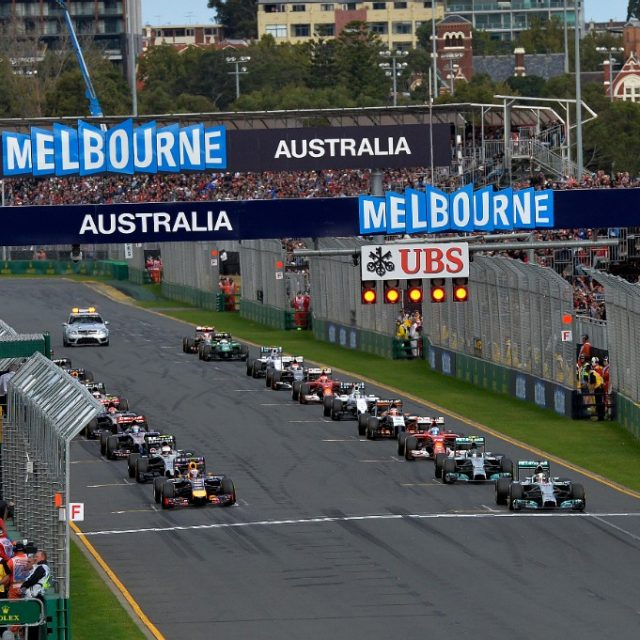

Formula One

My interest in Motorsports began when I went to the Long Beach Grand Prix. The sound of the engines coming around the hairpin and then shooting down Ocean Boulevard was captivating. To me this was the perfect engineering team sport. Building a race car and racing to see who is the best. I like to watch Formula One. They race all over the world and each weekend is an adventure. My favorite part of each race is the anticipation of the start and then to see how the first couple laps play out…Of course I also love changing weather conditions…cloudy skies, possible rain…fun, fun! Below is a link to some classic overtaking maneuvers. Enjoy!